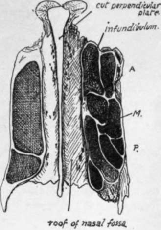
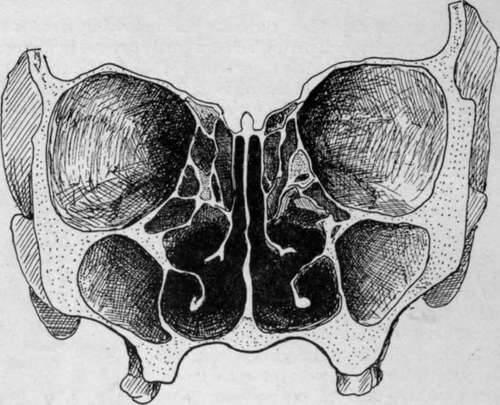
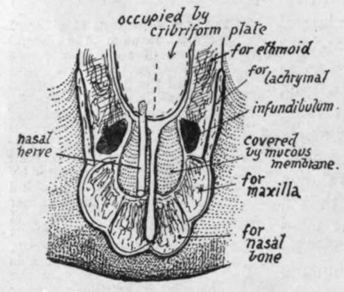

Nasal Bone. Part 3
Description
This section is from the book "The Anatomy Of The Human Skeleton", by J. Ernest Frazer. Also available from Amazon: The anatomy of the human skeleton.
Nasal Bone. Part 3
The group of posterior cells is placed in front of the sphenoidal turbinate, and the recess (Fig. 194) between them is known as the spheno-ethmoidal recess : the opening of the sphenoidal sinus in the sphenoidal turbinate is thus in the recess. The posterior group may show a partial subdivision by a groove into which one or more of the cells opens : the groove is then termed the meatus suprema, and its upper boundary may even form a small " supreme " turbinal. The specimens figured in the first two drawings in Fig. 194 show such grooves.
Fig. 197.-Sections at different levels through the lateral masses of an ethmoid, seen from below. On the right side of the figure the section runs at a lower level; A., anterior cells on outer side of infundibulum ; 71/., four cells of middle group, the hinder ones lying outside the posterior group which is represented by the inner cells at and behind the level of P. On the other side the section runs just below the roof and only opens cells of the posterior group, which are very large in this specimen. Observe that the back part of the posterior group may be partially separated, when the groove between it and the rest of the group becomes the meatus suprema and the fourth turbinal hangs from its projecting side. See Fig. 194.
Fig. 198.-Section through an Adult Skull.
The middle ethmoidal cells-as can be seen in the horizontal section in Fig. 197- are the smallest, and may only be represented by one cavity overlapped above and internally by the large posterior group. The anterior group seems to be the most variable in its development : the cells may, as in the specimen shown in Fig. 188, extend down into the uncinate process and be completed there by the maxilla and inferior turbinate, or they may tend to extend upwards between the infundibulum and the lachrymal and have their outer walls formed by the last-named bone. Further extensions of these cells are very common, involving the surrounding bones, so that cells of this group may have maxilla, lachrymal, inferior turbinate, or frontal forming part of their walls.
It is usual to see some incomplete cells on the upper aspect of the lateral mass, to be completed by the frontal, and such open recesses belong, as a rule, to the posterior group (Fig. 188), with the exception of the most anterior one, just behind the infundibulum, which is one of the middle series.
Open cells on the lower aspect of the lateral mass belong to the middle group and are closed by the maxilla and palate ; thus the ethmoidal surface of the orbital process of the palate shows cell walls, and the middle turbinate articulates with its lower and inner part.
Fig. 199.-Scheme of the roof of the front part of the nasal cavity. The inferior surface of the cribriform plate forms the roof as far forward as the front of the ethmoidal notch ; in front of this is the roof area of the frontal : mucous membrane extends from this on to the posterior surface of the nasal bone (roof) and nasal process of maxilla (side wall). The nasal nerve passes between the ethmoid and frontal, to lie between the mucous membrane and the roof area of the frontal, and so on to the nasal bone.
The roof of the nasal fossa is highest in the ethmoidal region and slopes down in front of and behind this. It is made (Fig. 193) from behind forwards by the sphenoid, the cribriform plate of the ethmoid, nasal area of frontal, nasal bone, and finally by the junction between the cartilaginous alae and septum. The student should follow the formation of the roof with care, especially in the region of the frontal bone : the nasal area of this bone is situated beside the nasal spine (see Fig. 199). The nasal nerve comes through the roof of the cavity between the frontal and ethmoidal parts of the roof, so that the nerve runs down below the frontal and nasal bones, to emerge once more between this last bone and the cartilaginous part of the roof. The olfactory fibres pierce the ethmoidal (cribriform) part of the roof.
The floor, made by the horizontal processes of palate and maxilla, is concave from side to side, and also in some degree from before backwards, owing to the higher level of the premaxillary region ; the curve of the floor is continuous with that of the inferior meatus at the side. The general level of the cavities of the nose and the maxillary sinus is about the same, but the front part of the nasal floor may be rather higher than the front part of the floor of the sinus.
The posterior nares are the hinder openings of the fossae ; they are separated from each other by the posterior edge of the vomer. Each opening has the vomer as its inner boundary, the internal pterygoid plate for its outer wall, the horizontal plate of the palate below, and the body of the sphenoid above. But it must be noticed that the ala of the vomer and the inner pterygoid plate meet below the sphenoid and are therefore concerned in forming the roof of the opening.
The anterior opening is a common one for both fossae unless the septal cartilage is in place. It is often termed the " pyriform aperture " owing to its shape, and is bounded laterally and below by the maxillae and by the nasals above ; its lower edge is produced centrally into the (anterior) nasal spine.
A slight ridge may be visible just behind the margin at the infero-lateral angle, more apparent when the proper margin turns down, as it sometimes does, to be lost on the front surface of the premaxilla ; the ridge thus seen lies over the course of the anterior dental (incisive) nerve, and here minute branches can pierce the bone to supply the front end of the inferior meatus. The fossette (variable in size and definition) between the ridge and the true margin is seen well in lower races. The superolateral edges have the lateral cartilages attached to them by fibrous tissue. The lower edge is free and covered by the tissues of the lower margin of the narial aperture.
Continue to: